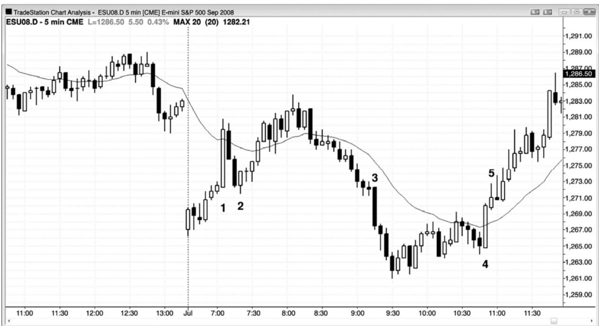
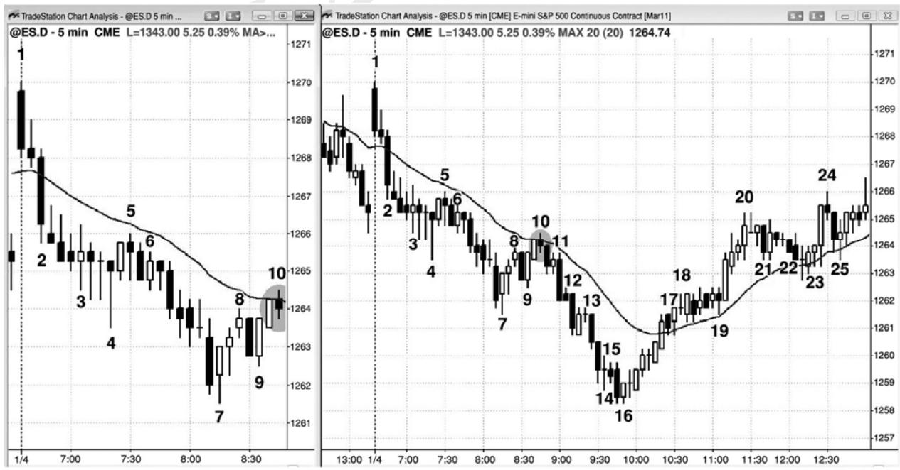
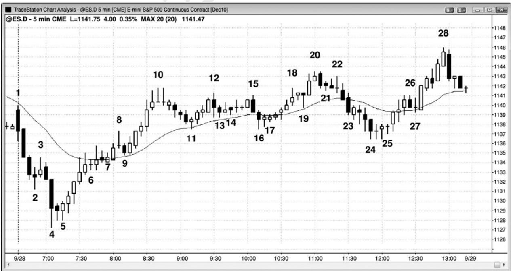
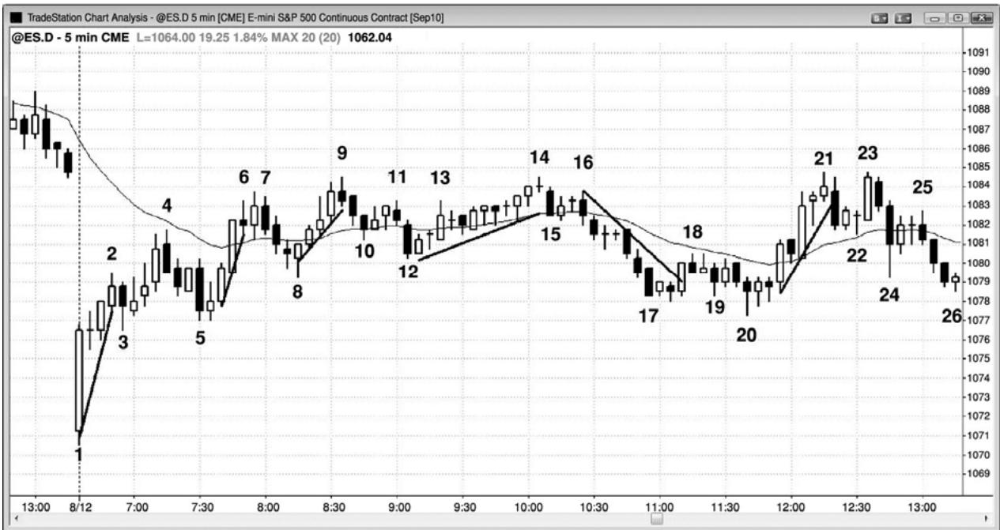

第10章 其他磁力位¶
第 10 章 其他磁力位
很有很多磁力位倾向于把市场拉向它们所在位置，形成测试。这里列出一些。其中很多磁力位在这一系列书中其他地方讨论。当市场朝着某个磁力位做趋势运动时，较为明智的做法是一直做顺势交易，直到那个磁力位被测试，最好是被过冲。不要在磁力位做逆势交易，除非之前已经显现出一些逆势力量，比如趋势线突破，或者除非那波运动是更高时间框架趋势中的一次回撤。
趋势线。
趋势通道线。
任意测量运动目标，包含腿 1＝腿 2 投影。
尖峰和通道：通道的起点通常在不久后被测试。
昨天的最高价、最低价、开盘价和收盘价。
过去几棒、甚至几天的波段高点和低点，常常形成双重底多头旗形和双重顶空头旗形。
突破点。
任意类型的缺口，包括均线缺口。
每种回撤之后形成的趋势极点（见关于第一个回撤序列的第 11 章）。
当天或前几天的交易区间，包括紧凑交易区间和带刺铁丝：极点和中点常常被测试。
交易区间日区间的近似中点，特别地，如果那一区域（一个胖区）出现一个日内交易区间。
最终旗形：旗形突破后，市场返回那个旗形，通常会向另一侧突破。
带刺铁丝。
入场棒和信号棒保护性止损位。
入场价位（突破测试）。
巨型趋势棒反向极点（巨型多头趋势棒的低点和巨型空头趋势棒的高点）。
刮头皮交易和波段交易的常见利润目标：在 AAPL 中，是 50 美分和 1 美元；在 5分钟电子迷中，对于 4 个跳动的刮头皮，是5到6个跳动，对于波段交易，是 3 点、4 点和 10 点。
等于所需保护止损幅度的运动：如果电子迷你需要你使用 12 个跳动的保护性止
损来避免被止损踢出，那么预期市场最终向对自己有利的方向运动12个跳动。
日线图、周线图和月线图上的波段高点和低点、棒线高点和低点、均线、缺口、斐波那契折返位和扩展位，以及趋势线。
大整数，比如股票中的整百数（比如 AAPL 在 300 美元）和道琼斯工业平均指数中的整千数（道指 12,000）。如果股价从$50 快速上涨至$88，那么它很可能会努力去测试$100，回撤前通常会到达$105 或$110。

P105
当出现尾线短小的巨型趋势棒时，在那一棒或不久之后入场的交易者们，常常会把他们的保护性止损设在超出那一棒的位置。市场返回那些止损位，然后又反转回到趋势棒方向的情况相当常见。
图10.1中，棒1是一条光脚巨型多头趋势棒。市场向下反转离开后面那条空头内包棒，形成一个更高低点，不过是在击中趋势棒下方的保护性止损之后。聪明的交易者们会在那条内包棒做空，但是他们准备好在棒 2 多头反转棒上方做多，棒 2 击中止损，然后使市场向上反转。
棒 3 和棒 4 也是尾线短小的巨型趋势棒，但是都没有立即出现回撤来击中止损。
第三部分 回撤：趋势转变为交易区间
即便市场处于强趋势时，也常常会有一些时期出现双向交易，但是只要交易者们认为趋势将会恢复，那么它们就只是一些回撤。这些交易区间小到足以让交易者们仅仅把它们看作趋势中的暂停，而不是图表的主要特征。在你正在观看的图表上，所有回撤都是小型交易区间，所有交易区间都是较高时间框架图表上的回撤。然而，在你面前的图表上，大部分对交易区间的突破尝试都会失败，但大部分对回撤的突破尝试都是成功的。在更高时间框架的图表上，交易区间就是简单的回撤，如果你在那张图表上交易，那么你可以像其他任意回撤一样交易。由于更高时间框架图表上的棒线会更长，所以你的风险更大，于是你不得不减小你的头寸规模。大部分交易者喜欢使用单时间框架交易，而不喜欢来回切换时间框架，使用不同的头寸规模、不同幅度的止损和利润目标。
如果市场处于强趋势中，而且每个人都预期趋势继续，那么为什么会出现回撤呢？为了理解为什么，我们来看一个多头趋势的例子。向下反转进入回撤，是由多头的获利了结引起的，较少是由空头的刮头皮引起的。多头会在某个点处获利了结，因为他们知道从数学上来看那是最佳操作。如果他们一直持有，那么市场几乎总是会回归他们的入场点，最终会向下大幅下跌，产生很大的亏损。他们永远无法确切地知道获利了结的最佳位置，他们把阻力位当作最佳出场点。对你来说，这些价位可能是明显的，也可能是模糊的，但是因为它们为交易者们提供了机会，所以不断关注它们是非常重要的。趋势刮头皮者们和波段交易者们，以及逆势刮头皮者们，预期出现回撤，并做出相应的操作。当市场到达一个目标，那里有足够多的多头认为他们应该获利了结时，他们的新买压的缺乏加上他们对多头头寸的抛售，将致使市场暂停。那个目标可能是某个阻力位（在本书第二部分关于支撑和阻力的章节中讨论过），或者是重要信号棒上方特定数量的跳动处（比如在电子迷你中是 6、10 或 18）。那条信号棒可能拥有一个多头实体，该实体长度小于前一棒多头实体的长度，它可能有一条上尾线，下一棒可能是一条具有空头实体的小型棒。这些都表明多头不大愿意在波段的顶部买进，有些多头获利了结，空头开始刮头皮。如果有足够多的多头和空头卖出，那么回撤将变得比较大，当前一棒可能跌破前一棒低点。在强多头尖峰中，交易者将预期多头趋势马上恢复，于是多头和空头都会在前一棒低点附近买进。这产生了高点 1 买进信号，接下来通常是一个新的高点。当多头趋势成熟并变弱时，将会形成更多的双向交易，多空双方预期回撤将下跌更多跳动数，持续更多棒。市场可能形成一个高点 2 买进信号、一个三角形、或者一个楔形多头旗形。这产生一轮小的下跌趋势，当它到达某个数学目标时，多头将开始再次买进，空头将获利了结，买回他们的空头头寸。双方都不再卖出，直到市场上涨幅度大到上述过程重要。
当多头变得不愿继续在 1 到 3 个跳动的下跌买进时，部分买压开始枯竭。他们变得越来越谨慎，怀疑即将形成更大的回撤。因为他们认为自己能够在高点下方再低 6 到 10个跳动的位置买进，所以没有动机在较高的价位买进。另外，对于他们来说，存在部分或全部获利的动机，因为他们认为市场不久将更低，在那里他们能够再次买进，当市场测试最近高点时，他们能够获得更多利润。动能程序感知到动能的损失，也会获利了结，并且不再入场，直到任一方向上的动能恢复。空方也看到趋势正在变弱，开始在棒线的高点上方和波段高点上方卖出，做刮头皮交易，随着市场上涨，他们逐步加仓。一旦他们看到更多卖压，他们还会在棒线低点下方做空，预期出现更深的回撤。
对于大部分多头来说，退出多头头寸的所需卖出信号，要比新建头寸所需的卖出信号弱。他们开始是准备在市场表现出力量时获利了结，比如在波段高点或前一棒高点或大型多头趋势棒的收盘价上方。当在市场表现出力量时的获利了结结束后，他们接下来会在市场表现出弱势时将剩余头寸获利了结，并且开始在空头反转棒下方抛售他们的多头；他们怀疑回撤将变得越来越大。大部分不会加入到做空的空头之列，因为大部分交易者没有能力一直很好地反转交易。他们刚才一直认为市场是上涨的，通常在了结多头几分钟后，他们才会说服自己应该反向交易了。如果他们认为市场只是在回撤而不是在反转，那么一旦他们认为回撤已经结束，他们就会买回自己的多头。由于大部分多头不能或不打算反转，所以当他们正准备买进时，他们不希望做空。如果他们做空头刮头皮，那么他们就更不可能会反转做多，他们会发现自己被套出一个多头波段，因为他们在努力做一笔很小的空头刮头皮交易。努力去在一笔低胜率的空头交易上赚取 1 点，结果错过 2 到 4 点的高胜率多头交易，从数学上讲是没有道理的。
P107
在一轮多头趋势中，包含一系列更高高点和更高低点。当趋势强劲时，多头将会以任意理由买进，而且很多人会跟踪调整他们的保护性止损。如果市场创出一个新的高点，那么他们会向上调整他们的止损至最近的更高低点。如果有足够多的空头做空，足够多的多头获利了结，那么反转可能比交易者们开始预期的要强。这常常发生在趋势后期，之前出现过几次回撤，每次回撤之后市场都形成新的多头高点。然而，多空双方都认为市场将返回最近的波段低点上方，双方通常会在那个低点或其上方买进。结果形成一个双重底多头旗形或另一个更高低点。下跌可能非常迅猛，但是只要足够多的交易者认为多头趋势仍然在起作用，那么交易者们就会买进，市场将测试原来的高点，在那里，多头将部分或全部获利了结，空头将
再次做空。
随着多头趋势逐渐成熟，交易者们将只准备在较深的回调买进，他们预期市场形成两条腿调整，第二条腿将跌破第一条腿的低点。价格行为告诉交易者们像这样较深的调整很可能在什么时间形成，当他们认为正在形成较深的调整时，他们就不再把保护性止损跟踪调整至最近的波段低点下方。他们打算在更高价位获利了结，比如在最近的波段高点上方，然后准备在那个低点附近再次买进，重建多头头寸。一旦他们认为市场很可能出现两条腿调整，因此会跌至那个低点下方，那么以最近的更高低点下方为止损，对于他们来说是不合理的。在那发生前，他们会退出大部分或全部头寸，但仍然保持看涨。多头趋势不再形成更高高点和更高低点。但是，这个更低低点通常仍高于更高时间框架图表上的最近的更高低点，所以更大的多头趋势仍然在起作用。这个两条腿回撤是一个大型高点 2 买进架构，当趋势成熟时，这些回撤变得更大，而且包含很多分支。如果趋势真的反转，那么将会形成一系列更低的高点和低点，但通常会出现清晰的反转（反转将在第三本书中讨论）。如果没有清晰的反转，那么两条腿下跌运动就只是一种多头旗形，接下来通常是一个新的高点。举例说明，第一条下跌腿可能是一个小型空头尖峰，第二条下跌腿可能是一条小型空头通道。如果下跌运动很强，即便是处于紧凑、复杂的通道内，而且不是一个空头尖峰，那么交易者们也会预期它成为至少两条腿下跌中的第一条腿。在回撤买进的多头将会在趋势高点下方获利了结，空头将开始在原来的高点下方积极做空，预期出现一个更低高点和第二条下跌腿。
一旦市场开始创出更低的高点，那么多头通常就只准备在较深的回撤买进，他们的买压的缺乏有助于形成那些更深的回撤。空方看到相同的价格行为，开始持有空头静待更大的利润，预期下跌幅度变得更大。在原来高点附近（略高、位于或略低），市场反复下跌，但是继续从原来低点附近上涨。向上和向上的突破尝试失败，市场失去方向，产生近期不确定性。这种不确定性是交易区间的标志。多方会反复尝试恢复趋势，空方则反复尝试反转趋势，80%的情况下，双方都以失败告终。由于多头趋势中的交易区间只是更高时间框架图表上的一个多头旗形，所以几率偏向于向上突破。总会出现某种形态，多空双方认为它是多头趋势即将恢复的征兆。当一个可靠的形态出现时，较少的空头愿意在反弹时做空头刮头皮，多头开始向着区间顶部继续买进。由于较少空头愿意做空，较少多头愿意抛售他们的多头头寸，所以市场会向上突破交易区间。如果突破很强，那么预期出现较大回调或反转、建立波段头寸的空头，将买回他们的空头，至少在接下来的若干棒内不准备再次做空。空头既不刮头皮，也不做波段交易，多头不获利了结，在这样的情况下，市场通常会向上形成一波测量运动，约等于交易区间的高度。然后多头开始获利了结，空头开始再次做空。如果卖压很强，那么将会出现回撤、交易区间、甚至是向下反转。
相反的情形发生在空头趋势中。回撤最初是由空头在新的低点获利了结引起的，但是总会有一些多头积极买进，他们认为市场上涨幅度将足以让他们做一笔可获利的刮头皮交易。一旦市场已经上涨至某个阻力位，通常表现为低点 2 或低点 3 形态，那么多方将会抛空自己的头寸而获利，空方将再次做空。空方希望市场继续创出更低的高点和低点。每当他们看到一波快速的反弹时，当市场靠近最近的更低高点时，他们会积极做空。有时，在市场到达最近的波段高点前，他们不会重仓做空，因此常常见到双重顶空头旗形。只要市场继续创出更低的高点，他们就知道大多数交易者会认为空头趋势仍在起作用，所以接下来很可能会形成另一个更低的低点，他们可以在那里将自己的空头头寸部分或全部了结。最终回撤将演变为交易区间，将会出现一些超越最近更低高点的反弹。在更高时间框架图表上，仍然是更低的高点和低点，但是在你交易的图表上，这个更高的高点表明空头趋势正在失去一些气力。随着空头趋势成熟并变弱，市场常常会形成两条腿反弹，既会形成一个更高低点，也会形成一个更高高点，但是空头趋势仍然在起作用。这是低点 2 做空架构的基础，低点 2 做空架构就是一个两条腿反弹。区间内将会形成某种形态，告诉多空双方空头趋势很可能恢复，那种形态常常出现在阻力位，比如测量运动目标或趋势线。这将使得多方不大愿意在区间底部买进，空方更愿意在跌至底部的过程中继续卖出。然后，市场向下突破，多头刮头皮者停止买进，多头波段交易者抛出他们的多头头寸。接下来市场下跌大约一波测量运动，在测量运动目标处，空方将开始获利了结，激进的多头将再次开始买进。如果多方和空方的买进足够强，那么将会出现回撤、交易区间、或者趋势向上反转。
P108
回撤的最后一条腿常常是一条逆势的微型通道（多头旗形终点的空头微型通道或空头旗形终点的多头微型通道）。在回撤之前，微型通道的突破通常只会持续一两棒，特别当微型通道包含 4 棒或更多棒时。如果趋势很强，那么常常不会出现回撤，所以在微型通道的突破入场是合理的。当趋势不是特别强时，微型通道的突破通常在一两棒内会出现一次失败的尝试。就像所有突破一样，交易者们不得不仔细比较突破的力度与于失败突破信号棒的力度。如果突破明显较强，特别地，如果当前趋势很强，那么反转尝试很可能失败，引出一个突破回撤架构，给交易者带来在突破方向上的二次入场机会。如果突破相对较弱，比如是带有长尾线的小型趋势棒，而反转棒很强，特别地，如果背景很可能引起反转（比如略低于交易区间顶部的一个多头旗形），那么反转尝试或许会成功，交易者们应该选择反转入场。如果突破和反转旗鼓相当，而且当前没有很强的趋势，那么交易者们就要研判下一棒的力道。举例说明，如果交易区间中点处出现一个多头旗形，突破该旗形的多头趋势棒后面是一条同等强度的空头反转棒，而且市场跌破了那一棒的低点，那么交易者们就要评估那条空头入场棒的外观。如果它成为一条多头反转棒，那么他们将假定市场只是在形成多头旗形突破后的一个回撤，并且会在那一棒的高点上方买进。相反地，如果它是一条强空头趋势棒，特别地，如果收盘于低点，而且低于之前多头突破棒的低点，那么交易者们将把该形态看作是一个空头突破而准备做空，如果他们刚才没有准备在那条空头反转棒下方做空的话。
最严格意义上来讲，回撤是突破了前一棒极点的一条逆趋势棒。在多头趋势中，回撤是至少跌破前一棒低点 1 个跳动的一波运动。然而，比较宽泛的定义更为常用，趋势动能中的任何暂停（包括内包棒、反向趋势棒、或十字星棒）都应被看作一个回撤，尽管它们可能只是横向运动，没有实际的反向运动。甚至是最强的趋势形成过程中，在某个点处，市场也会给出证据，表明回撤将会有多深。最常见的情况是市场会形成一段双向交易区。举例说明，在一轮尖峰和通道多头趋势的尖峰之后，市场出现暂停或回撤，成为通道的起点。一旦趋势通道结束，下跌（回撤）开始，市场通常会向下测试通道的底部。那是空头开始卖出的位置，当多头通道向上超越他们的空头入场点时，他们开始担心起来。随着多头趋势继续，他们和其他多头卖出更多，但是，一旦趋势向下反转进入回撤，那些空头将非常高兴地在他们的最早和最低做空入场点（即通道起点）平仓。一旦他们平仓，他们就不打算在那一区域卖出，因为他们看到了市场在他们早先做空交易之后上涨的幅度有多大。但是，如果他们仍然看跌，那么他们还会在反弹做空。如果反弹结束于前一高点下方，那么将形成一个更低高点，通常会引出第二条下跌腿。如果空方特别强，那么那个更低高点将会成为一轮新空头趋势的起点，而不仅仅是刚刚开始形成的交易区间内的一个二次回撤。
对于趋势终点的楔形也是如此。如果一轮空头趋势形成一个向下倾斜的楔形，那么市场会努力向那个楔形顶部回调，那里是最早的多头开始买进的地方。如果市场能够到达他们的最早入场价位，那么他们就能够在盈亏平衡点退出那笔交易，所有在较低价位入场的交易都将获利，在市场再次下跌前，他们很可能不想买进。他们从第一笔交易中得到教训，他们买进的价位太高了；当市场继续下跌时，他们不喜欢让自己多头头寸的账面亏损不断增长，他们不希望再像第一笔交易那样。这一次，他们会等待回撤，希望市场形成一个更高低点，甚至一个更低低点。他们预期楔形最初的低点将成为后来任意回撤的支撑，在略低于那一价位的地方使用止损单买进，将使他们的交易具有确定的、有限的风险，他们喜欢那样。
市场在趋势中具有测试最早的双向交易区的倾向，这使得感觉敏锐的交易者们能够在回撤可能形成时预期出现那种测试，并且预测出回撤可能的幅度。他们不想在第一个双向交易征兆出现时逆势入场，但是那种双向交易告诉他们，逆势交易者们正开始建仓，不久之后市场很可能会向那一价位回撤。在趋势通道或楔形或台阶形态开始形成反转征兆后（见第三本书中关于趋势反转的一章），他们将选择逆势交易，并且准备在双向交易开始的位置（通道的起点）获利了结。
虽然回撤与较大的趋势相比它通常比较小，但它也是一种趋势，像所有趋势一样，它也常常至少包含两条腿。一条腿和三条腿回撤也很常见，比如小型通道和三角形，但是所有回撤都相对短暂，交易者们预期趋势很快恢复。有时只能在更小时间框架图表上看到腿形，而有时腿形较大，每条腿都可细分为更小的腿，而每条更小的腿也拥有两条腿。因为交易者预期主要趋势不久便恢复，所以他们的交易方向与回撤中的突破相反。举例说明，如果出现一轮强空头趋势，最后出现一个包含两条上涨腿的回撤，当市场向上突破第一条上涨腿的高点时，看空者通常远多于看多者。尽管市场向上突破了一段多头趋势中的一个波段高点，但是多头在突破的买进通常不如空头在那一位置做空的力量强，因为他们预期突破失败，空头趋势将很快恢复。他们将使用限价单和市价单在那个波段高点及其上方做空。他们把这个突破看作在一个较高价位重建空头头寸的短暂机会。由于 80%的令趋势反转的尝试会失败，所以几率强烈偏向于空方。对于强趋势中的第一个两条腿回撤，这尤为正确。
P109
任何一波拥有两条腿的运动都应作为回撤来交易，即便它是顺势的。有时，一轮趋势的最后一条腿是一波两条腿的顺势运动，到达多头趋势的一个高点或更低高点，或者到达空头趋势的一个更低或更高低点。举例说明，如果在一轮多头趋势中出现一波抛盘，跌穿了多头趋势线，这一趋势线突破之后出现了一波两条腿回撤，那一波回撤只是测试前一极点，甚至可能超越原有极点。也就是说从那个趋势线突破开始的回撤，既可能形成一个更低的高点，也可能形成一个更高的高点，但仍然是向新的空头趋势转变过程的一部分。严格来讲，在最后一个高点之前，空头趋势并没有开始，但那个最后的高点常常只是一个从对多头趋势线的向下突破开始的更高高点回撤。
什么样的形态称得上的两条腿呢？你可以绘制一份基于收盘价的线图，常常就可以清楚地看到两条腿运动。如果你正使用棒线或 K 线图，那么最容易看到的两条腿运动是这样的：出现一波逆势运动，然后是一波较小的顺势运动，然后是第二波逆势运动（一波典型的 ABC回撤）。那么市场为什么常常在第二条腿之后反转呢？我们以多头趋势中的一波两条腿回撤为例。多头将在新的低点（C 腿）买进，认为第二条下跌腿将是趋势的终点。同时，正在寻找两条腿调整的空头刮头皮者，将买回他们的空头头寸。最后，在第一条腿（腿 A）的低点买进的激进的多头，现在将在向一个更低低点的运动中增加他们的多头头寸。如果所有这些买家压倒了在第一条下跌腿被向下突破做空的新空头，那么接下来将形成一波反弹，通常最低
会测试原有高点。
然而，两条腿形态常常只有在更小时间框架图表上才能看清楚，在你正在观察的图表上，常常需要推测。在一天当中，由于只使用单张图表交易比查看多张图表要更为简单，所以如果交易者们能够在他们面前的图表上看到两条腿形态，那么他们便拥有了一项优势，即便是通过推测得到的。
在多头市场中，当出现一系列多头趋势棒时，可以认为空头趋势棒是回撤的第一条腿（A腿），即便那一棒的低点高于前一棒的低点。如果你查看一张较小时间框架图表，那么逆势腿形很可能比较明显。如果下一棒拥有一个顺势收盘，但是高点低于结束多头波段的那一棒的高点，那么这就是 B 腿。然后，如果出现一条空头棒，或者低点低于前一棒低点的一棒，那么这将产生第二条下跌腿（C 腿）。
推测成分越多，形态的可靠性就越低，因为越少的交易者会看到他，或对它有信心。交易者们很可能投入较少的资金，而且会以更快的速度离场。
这里有一点是显而易见的。如是现在回撤的趋势以高潮或任何明显的趋势反转形态结束，那么趋势就已经改变，所以不应准备在原趋势中的回撤入场。它已经结束，至少10棒左右或当天剩余时间内不会恢复。因此，在一波强反弹之后，如果在突破多头趋势线后出现一个楔形顶或一个更低低点，那么你现在应该寻找做空架构，而不是寻找原来多趋势中的回撤而买进。当没有清楚的趋势反转形态出现时，双向架构很可能奏效，至少可以做刮头皮。趋势反转发生的可能性越大，避免在原来方向交易的重要性就越高，因为现在市场很可能在新的方向上至少形成两条腿。另外，这波运动的时间和点数，通常与反转的清晰程度大致成正比。当出现一个很棒的反转架构时，你应该把部分、甚至全部头寸波段化，但那种情况不常出现。
所有回撤都是以某种类型的反转形态开始的。反转形态通常强到足以令逆势交易者们逆势建仓，但并没有强到成为可靠的逆势架构。由于架构和回撤没有强到改变总在场内交易的方向，所以交易者们不应寻找逆势交易。相反地，他们应该寻找预示回撤可能结束的架构，然后在趋势方向上入场。但是，由于回撤起于反转，所以很多交易者会过度谨慎，从而令自己错失良机。对于任意一笔交易，你永远不会是百分之百确定，但是当你对一笔看起来不错的交易拥有合理的自信时，你就必须要相信数学，选择交易，接受将在某些时间亏损的事实。那就是交易的天性，除非你愿意接受亏损，否则你不可能以交易为生。记住，一位大联盟的棒球击球手，如果 70%的时间失败，那么将被认为是一位超级球星，另外的 30%将为他赚取数百万美元。
当市场处于弱趋势中，或者处于从交易区间向趋势转变过程的早期阶段时，常常会形成一个旗形，然后旗形突破，然后出现一个回撤，那个回撤成为另一个旗形。在强突破实现前，
有时市场会重复这一过程若干次。
一两棒的暂停比持续很多棒以及从极点的实际回撤要更难交易。举例说明，如果出现一波强多头运动，其中的最后一棒是一条小型棒，其高点只比前一棒（是一条大型多头趋势棒，前面是另外一两条大型多头趋势棒）高点低一两个跳动，如果你在这一棒上方 1 个跳动买进，那么你就是在当天的高点买进。由于很多机构会在每个新的高点做逆势交易，所以存在实质性的风险，在达到你的利润目标前，市场可能反转并击中你的止损。不过，如果趋势非常强劲，那么这是一笔要做的重要交易。使这笔交易如此难做的部分原因是，你只有极少的时间分析趋势的强弱、寻找可能的趋势通道线过冲或其他为什么交易可能失败的理由。
更难交易的暂停是小型十字星，其高点比前一条强多头趋势棒高出 1 个跳动。在那个十字星上方买进有时是一笔不错的交易，但是对于大多数交易者来说，足够迅速地对风险进行评估，是非常困难的，最好是等待更为清晰的架构。反对在暂停棒突破买进的一个理由是，如果上一两条趋势棒拥有相当长的尾线，那么就表明逆势交易者们有能力造成一些影响。另外，如果前一顺势入场之前是一个较大回撤，比如高点 2，那么你应该犹豫了，因为每个回撤通常变得越来越深，而不是越来越浅。然而，如果市场刚刚突破，并且有三条多头趋势棒的收盘靠近它们的高点，那么当你在这些棒之后的暂停棒上方买进时，成功刮头皮的机会还是不错的。总的来说，强多头趋势早期阶段的这些高点 1 做多架构（或者空头趋势中的低点1 做空架构），是大多数交易者应该考虑的唯一一类暂停棒。还要记住，单棒突破之后的暂停棒很可能只是一个反向入场，因为单棒突破常常失败，尤其当它们是逆势突破时。
P110
如果一波回撤相对于趋势来说较小，那么在它刚刚结束时入场通常是比较安全的。如果回撤大到足以产生一波可交易的强逆势运动，那么最好等到二次信号形成后交易。举例说明，如果强多头趋势中出现一条延长的空头通道，那么与其在第一个向上反转买进，不如等待从那个突破回撤，在突破回撤买进更为安全。
所有多头回撤的结束都有一个原因，那个原因常常是市场已经得到某种支撑。有时，回撤会平静地结束，有时会以与主要趋势方向相反的强空头趋势棒结束，几乎就要使趋势反转。这一点对于大型回撤和小型旗形突破之后的一两棒回撤都是正确的。甚至 1987 年和 2009 年的股市大崩盘，也是在月多头趋势线处结束的，所以只是多头趋势中的回撤。大部分结束于成簇的支撑位处，不过很多交易者可能只看到部分支撑位或根本没有看出。有些交易者会因为把注意力集中在某个支撑位而在多头趋势中的回撤买进，可能是多头趋势线、沿多头旗形底部绘制的通道线、先前的高点或低点、某条均线，或者其他任意类型的支撑位，而有些交易者会因为在相同区域内看到一个不同的支撑位而买进。一旦出现足够多的买家压倒空头，趋势便会恢复。空头回撤亦是如此。它们总是结束于成簇的阻力位处，尽管常常不容易看到市场正在看到的阻力位。一旦市场接近关键价位，真空效应经常会发挥决定性的作用。举例说明，如果买家认为市场正在接近某个重要的支撑位，那么他们常常会在一旁观望，等待市场击中那个价位。结果将产生一个非常强的空头尖峰，但是，一旦那个支撑位被击中，多头就涌入市场积极地持续买进。对于制造回撤的空头也是如此。他们也看到了那个支撑位，市场越接近那个支撑位，他们就越相信市场会到达那里。结果是他们积极地持续卖出，直到市场到达那个价位，然后他们突然停止卖出，迅速买回他们的空头头寸。回撤可能以一条大型空头趋势棒结束，它看起来可能会令总在场内交易翻转为空头，但是下峰顶的坚持到底卖出没有形成。相反地，多头趋势恢复，有时刚开始的恢复速度比较慢。当多空双方都在买进时，反转可能比较迅速，并且会持续较长时间。真空效应一直存在，甚至在像 1987 年和 2009 年股市大崩盘的最高潮反转期间，真空交易也是存在的。在那两个实例中，市场处于自由落体之势，但是一旦小幅跌破月趋势线，市场便强势向上反转。虽然两次大崩盘都充满了戏剧性，但它们只是真空效应在起作用的实例。
相同的行为发生在从旗形突破开始的一两棒回撤。举例说明，在强空头趋势中，如果均线处出现一个低点 2 空头旗形，它触发一笔空头交易，那么入场棒之后可能是一条多头趋势棒。这代表着一个失败的突破，可能是一轮多头趋势或一波较大空头反弹的开始。但是，它通常失败，当失败失败时，它就成为较大趋势中的一次回撤。这里，它成为一个突破回撤做空架构。交易者们将预期它失败，积极的空头将在它的收盘价、略低于和略高于它的高点的位置做空，比较保守的交易者会等待市场确认这条空头趋势棒只是空头旗形突破之后的一次回撤。如果回撤继续小幅延长的话，他们将使用止损单在那条空头棒、或接下来一两棒的下方做空。
由于回撤只是趋势中的一个暂停，不是反转，所以一旦你认为那是一个回撤，你就是认为趋势将会恢复，市场将测试趋势极点。举例说明，如果有一轮多头趋势，然后市场出现几棒的抛盘，如果你把那波抛盘看作一个买进机会，那么你就是认为它只是多头趋势中的一次回撤。你在预期市场会测试多头趋势的高点。重要的是注意，测试不一定会到达一个新的高点。是的，它经常形成一个更高的高点，但也可能是一个双重顶或一个更低的高点。测试之后，你需要决定多头趋势是还在起作用，还是已经转变为交易区间，甚至是空头趋势。
回撤常常是强尖峰，使交易者们怀疑趋势是否已经反转。举例说明，在多头趋势中，可能出现一两条大型空头趋势棒跌破均线，而且有可能跌至交易区间下方几个跳动处。然后，交易者们便开始怀疑总在场内方向是否正处于向下翻转的过程中。他们需要的是看到坚持到底卖出，可能仅仅是再出现一条空头趋势棒。每个人都将密切关注下一棒。如果它是一条大型空头趋势棒，那么大多数交易者将认为反转已经得到确认，于是开始在市价和回撤做空。反之，如果下一棒有一个多头收盘，那么他们怀疑反转尝试已经失败，抛售只是价格短暂而迅速的下跌，因此是一个买入机会。初学者们看到强空头尖峰的同时会忽略该尖峰形成的环境——强势多头趋势。他们在空头趋势棒的收盘价卖出，在其低点下方卖出，在下几棒的任意小幅反弹中卖出，在任意低点 1 或低点 2 卖出架构的下方卖出。聪明的多头则站在那些交易的相对一方，因为他们知道正在发生什么。
市场总是试图反转，但是那些反转中有 80%会失败，而变为多头旗形。当反转尝试发生时，两三条空头棒可能是非常有说服力的，但是，如果没有坚持到底卖出，那么多方就把那次抛售视作一次在短暂抛售高潮低点附近再次做多的很棒的机会。经验丰富的多头和空头等待那些强趋势棒，有时会在一旁观望，直到一条强势趋势棒形成。然后他们进入市场买进，因为他们把它看作是抛售的高潮结束。空方买回他们的空头头寸，多方重新建立他们的多头头寸。趋势终点发生的情况与此相反，强势交易者们正在等待一条大趋势棒出现。举例说明，在靠近支撑区的强势空头趋势中，常常会有一个比较晚的突破，表现为一条异常大的空头趋势棒。多方和空方都停止买进，直至他们看到它形成。在那一点处，双方都在抛售高潮买进，因为空方把它看作一个很棒的了结空头头寸以获利的价位，而多方则把它看作一个在极低价位买入的短暂机会。
P111
如果交易者们认为自己看到的只是一个回撤，那么他们相信趋势仍然在起作用。当他们评估交易者方程时，永远不会确切地知道胜率是多少，但是，由于他们是在趋势方向上交易，所以他们可以假定等距运动的方向概率是 60%。胜率可能更高，但不大可能会低很多。否则，他们将得出结论，回撤已经持续太长时间，已经失去它的预测价值，变成了普通的交易区间，最终向上或向下突破的概率大致相等。一旦他们确定了自己的风险，他们就能够设定一个利润目标，其大小至少与风险相当，然后合理地假设他们有大约 60%或更高的机会成功。举例说明，如果他们在高盛（GS）的一个多头旗形突破买进，他们的保护性止损低于那个多头旗形，约低于他们的入场点 50 美分，那么他们可以假定自己至少有 60%的机会在他们的多头交易中赚到 50 美分。他们的利润目标可能是对多头高点的测试。如果那就是他们的利润目标，而且那个高点高于他们的入场点$2.00，那么他们仍然可能有 60%左右的机会成功，但是，现在他们的潜在回报是风险的 4 倍，这将在交易者方程中产生一个非常棒的结果。
一旦你认为市场已经反转，那么在新的趋势展开前，它通常会回撤测试先前的趋势极点。
举例说明，假定有一轮空头趋势，前一回撤强到足以突破空头趋势线，现在市场正在从一个对空头趋势底部的更低低点测试向上反转。这可能是进入多头趋势的趋势反转。如果第一条上涨腿是一个强尖峰，那么你会认为反转的几率现在更高了。第一条强上涨腿之后的回撤，通常会形成一个更高的低点，但是也可能与空头低点形成一个双重底，甚至形成更低的低点。你怎么会认为趋势已经向上反转进入多头趋势，而市场现在仍然跌至更低低点尼？更低低点是空头趋势的标志之一，它不可能成为多头趋势的一部分。是的，那是传统的看法，但是，如果你使用越宽泛的定义，你就会在交易中赚越多钱。如果市场跌破原来的空头低点，那么你的多头头寸可能被止损踢出，但是，你可能仍然相信实际上是多方在控制市场。那个上涨尖峰是对原来空头趋势的突破，并使市场反转进入多头趋势。突破之后的回撤是否跌破空头低点并不重要。假设市场恰好在原来低点停止，而不是跌至其下方 1 个跳动。你真的认为那具有重要意义吗？有时候是，但通常接近就好。如果两个形态相似，那么他们的行为将会相同。你是否把多头尖峰或向更低低点的回撤看作多头趋势的起点，也不重要。严格来讲，尖峰是反转处的第一次尝试，一旦市场跌破尖峰底部，它就失败了。然而，它仍然是那个表明多方掌控市场的突破，回撤至更低低点和空方暂时重新控制市场，真的不重要。重要的是多方在控制市场，这种状态很可能会持续很多棒，所以你需要准备在回撤买进，即便那第一个回撤跌至了更低低点。
多头趋势中回撤至更低低点，或空头趋势中回撤至更高高点，在每张图表上的小型腿中时有发生。举例说明，假定有一轮空头趋势，然后出现一条紧凑的通道上涨至均线，那么通道持续了大约 8 棒。因为通道紧凑，所以它很强，也就是说第一个空头突破很可能会失败，尽管它是趋势方向上。在准备做空前，交易者们通常会等待向上的回撤。然而，那个回撤常常创出更高高点，形成一个空头趋势中的 ABC 回撤。他们会在前一棒低点下方做空，自信地认为均线处的低点 2 做空架构是强空头趋势中的一笔很棒的交易。很多交易者不把这个 ABC形态看作是一个空头突破（B腿是对构成 A腿的通道的向下突破），然后突破回撤至一个更高高点（C腿），但是如果你仔细考虑一下，实际上就是那样。
有一种特殊类型的更高高点或更低低点回撤，常见于主要趋势反转，将在第三本书中讨论。举例说明，如果出现一轮多头趋势，有一波很强的运动跌破了多头趋势线，然后是一波弱势反弹（比如一个楔形），创出一个新高，这个更高高点有时便成为一轮新空头趋势的起点。如果市场接下来向下反转进入一轮空头趋势，那么这个向更高高点的弱势反弹，便只是突破多头趋势线的空头尖峰之后的一个回撤。那个空头尖峰是空头趋势的实际起点，不过从那个尖峰开始的回撤向上超越了它的顶部，在多头趋势中创出一个新高。在空头趋势行进20几棒后，大部分交易者会返回头来观察那个更高高点，把它看作空头趋势的起点，那是一种合理的结论。但是，当趋势正在形成时，精明的交易者们正怀疑市场是否已经反转进入空头趋势，他们并不关心空头尖峰之后的上涨在测试多头高点时是形成一个更低高点、一个双重顶、还是一个更高高点。从严格的技术分析角度来看，在那个空头尖峰期内，一旦空方掌控市场，（空头）趋势就已经开始，而不是等到测试多头高点之后才开始。一旦市场从那个更高高点迅猛下跌，趋势反转便得到了确认。虽然那个更高高点实际上只是空头尖峰之后的一个回撤，但是不管你认为两个高点中哪一个是空头趋势的起点并不重要，因为你会以相同的方式交易，准备在那个更高高点下方做空。同样地，在市场强势反弹向上突破空头趋势线后，当空头趋势从一个更低低点反转进入多头趋势时，上面的推理同样正确。多方在向上突破多头趋势线（译注：应为空头趋势线，疑为笔误）的尖峰中便已掌控市场，但大部分交易者认为新的多头趋势开始于那个更低的低点。而那个更低低点不过是强多头尖峰之后的一个回撤。
P112
在非常少的几棒之内涵盖大量点数的任意趋势，也就是说有一些大型棒线组成的趋势，而且棒线之间只有非常小的重叠，最终会出现回撤。这些趋势的动量如此之强，以至于回撤之后趋势恢复，然后测试趋势极点的几率非常之高。回撤通常会超越趋势极点，但只要回撤没有转变为反方向的新趋势，并且延伸超出原来趋势的起点就可以。总之，如果回撤幅度达到 75%或更多，那么回撤将返回先前趋势极点的几率便会大打折扣。对于空头趋势中的回撤，在那一点处，交易者最好把该回撤看作是一轮新的多头趋势，而不是原来空头趋势中的回撤。
等待回撤时最令人沮丧的事情是有时它看起来永远都不会出现。举例说明，当出现一波反弹，现在你自信地认为在回撤买进将是明智的，但市场一棒一棒地上涨，没有回撤，直到它走得非常远，现在你认为它可能反转，而不是回撤。为什么会那样呢？每一轮多头趋势都是由交易程序产生的，它们使用每一种能够想像得到的算法，当很多公司运行的程序在同一方向时，便产生很强的趋势。一旦你自信地认为多头趋势强劲，那么每个人都认为趋势强劲。老手们明白当前正在发生什么，他们认识到任意回撤都肯定会有买进，回撤之后将是一个新高。因此，他们正在做机构正在做的事情，而不是等待回撤。他们在市价或微小的回撤买进，那些回撤在他们面前的图表上并不明显。或许他们是在一两个跳动的回撤买进。交易程序会一直买进，因为在市场到达某个技术价位之前，趋势很可能会继续。在那一点，交易数学将会偏向于反转。换句话说，交易数学已经冲过了中性区，现在偏向于反转，因此，交易公司将会在反向积极交易，新趋势将会继续，直到交易数学再次冲过中性区，几率再次偏向于相反方向的运动。
举例说明，如果AAPL从$280上涨$4.00，在5分钟图上已经连续上涨7棒，那么第8棒、甚至后面几棒可能都会上涨。交易者们愿意在$280 买进，是因为他们了解等距运动的方向概率逻辑。由于他们自信地认为，在不久后某个点处，价格将比现在要高，而对于市场不久会下跌，他们并不自信，所以他们在市价和小幅下探买进。虽然他们可能不是以方向概率方法研判市场的，但方向概率是所有趋势交易的基础。当 AAPL 以强趋势上涨时，他们宁愿在$280买进，因为他们认为市场在跌回$279 前会上涨至$281。他们还认为，市场在下跌 1 美元之前会上涨至$282，甚至$283。他们可能不是用交易数学考虑这些问题的，而且准确的概率永远不得而知，但是在这种情况下，可能有 70%左右的概率 AAPL 会在回撤 1 美元之前上涨 2 到 3美元。也就是说，如果你做 10 笔这样的交易，那么有 7 次会赚到$2，共计$14 的利润，有 3次会亏损$1。你的净利润是$11，或者平均每笔交易大于$1。
相反地，如果他们等待$1.00 的回撤，那么可能在 AAPL 涨到$283 前不会入场。然后他们可能在$282 入场，但那比他们之前在市价买进要差了 2 美元。
如果他们在$280买进后，AAPL跌至$279，那么很多交易者会买进更多，因为他们认为市场反弹至新高的几率可能大于 70%，他们可以在盈亏平衡点退出第一笔多头交易，在低点入场的交易将收获1美元的利润。
对于等待回撤入场的交易者们来说，这是非常重要的。当趋势强劲时，在市价入场通常比等待回撤要明智。

P113
所有回撤都是从反转开始的，而且反转常常很强，于是交易者们因过于担心而不敢在顺势信号最后形成时入场。在图 PIII.1 中，左侧图表显示出均线处棒 10 低点 2 卖出架构形成时在 5 分钟图上的样子，右侧图表为为整个交易日的走势。棒 7 是一条强多头反转棒，随后在棒 9 出现一个很强的双棒反转和更高低点。然而，市场已经超过 20 棒没有触及均线，所以空头趋势很强，空头很可能打算在向均线的两条腿反弹做空，特别是还出现一条空头信号棒。当那个完美的架构最终形成时，很多初学者们因过分专注于棒 7 和棒 9，而忽略了此前的空头趋势，均线处出现一条空头信号棒的一个低点 2 做空架构，是一个可靠的卖出架构。反弹是由获利了结的空头和刮头皮的多头引起的，双方都计划在市场两条腿回撤至均线附近时强势卖出。多头获利了结，空头重建空头头寸。没有什么曾经是百分百肯定的，但是在空头趋势中的均线处出现空头信号棒时的低点 2，通常至少有 60%的可能性会成为一个成功的做空架构，空头会使用止损单在棒 10 下方 1 个跳动处做空。在这个特定的案例中，信号棒只有 3 个跳动高，所以空头将会冒 5 个跳动的风险，预期市场测试空头低点，约在下方两点处。很多空头在这第一个向均线的回撤做空，使用的是位于均线下方 1 个跳动处的限价单。别的空头把这看作第一个两条腿空头反弹，所以预期它会失败。当看到棒 9 多头反转时，他们设定限价单在棒 8 高点或其上方做空，那些订单将在市场上涨至棒 10 的过程中被执行。他们预期任何反转都是一个空头旗形的起点，认为任何向上突破都是在更高价位重建空头头寸的短暂机会；他们紧紧抓住那个机会，压倒了在棒8向上突破买进的多头。
棒 10 低点 2 空头旗形以一条强空头趋势棒突破而出，但后一棒却是一条多头趋势棒。这是尝试令突破失败。多方希望市场形成一个失败的低点 2，然后向上反弹，翻转为总在场内多头。然而，交易者们知道大多数反转尝试失败，所以很多人在多头收盘做空，使用限价单在它的高点上方做空。因为空方不知道市场是否会向上超越这条多头棒，如果他们正希望在那一棒或其上方做空，即使他们上侧的限价单没有被执行，他们也希望保证做空，所以很多人还会在那一棒的下方 1 个跳动处设定止损单。如果他们在那一棒高点处的限价单被执行，那么很多人会取消他们的止损入场单。如果他们的限价单没有被执行，那么那一棒下方的止损单将确保他们做空入场。大部分人可能已经在低点 2 突破做空，但有些人会随着市场向他们的方向运动而加仓。计算机化的程序交易尤其如此，很多程序在市场持续下跌的过程中不断做空。
顺便提一句，在反转时交易的基本规则之一，当市场二次尝试恢复趋势时离场。在这个例子中，预期棒7成为最后一个底部为时过早。一旦市场在均线处形成一个低点2，特别地，棒 10 信号棒拥有一个空头实体，所有多头头寸必须全部了结。很少有人能够反转做空，不具备那种能力的交易者们退出他们的小型多头刮头皮交易，错过一笔大的空头交易。在空头趋势中，耐心等待市场向均线反弹时做空，比做多头刮头皮要好得多。
一旦多头趋势明朗，交易者们便预期第一个两条腿回撤失败。当他们看到棒 21 后面的多头趋势棒时，他们在棒 21 低点下方设定限价入场单，因为他们预期对棒 21 的向下突破将会失败。它可能是强多头趋势中的第一波两条腿下跌，而大部分强趋势中的第一波逆势运动失败。他们还认为均线将提供支撑，那里将会有积极的买家。当市场向均线下跌时，他们的限价买单被执行。别的多头会使用止损买单在棒 23 高点上方入场，因为它是多头趋势中的一个高点 2 买进架构，有一条多头信号棒出现在均线处，是一个非常强的买进架构。
P113
棒 24 空头反转棒有一条下尾线，比对从棒 20 到棒 23 前一棒的空头微型通道的多头突破略弱。突破棒是一条大型多头趋势棒，它前面有两条多头棒。有些交易者会在棒 24 下方做空，预期多头突破失败。别的交易者则在等等看下几棒的走势。空头入场棒是一条强空头棒，但却未跌破多头突破棒的低点，所以市场仍未反转为总在场内空头。下一棒拥有一个多头实体，所以没有确认卖压。多头在它的高点上方买进，认为它是多头趋势、或正在形成中的交易区间内的一条多头腿中均线处的一个合理的突破回撤买进架构。

每个回撤都是从某种类型的反转架构开始的。很多顺势交易者开始获利了结，逆势交易者新建头寸，都需要反转。是的，当顺势机构获利了结，逆势机构开始对反转交易逐步加仓时，它们便制造了反转形态。然而，其他大量机构和交易者在开始交易前等待反转的早期征兆，所有交易者的累积效应制造了回撤。如果趋势强劲，反转架构很弱，那么回撤有时只持续一两棒，比如图 PIII.2 中的棒 3、9 和 19 处。有时，市场只是暂停，形成一个横向回撤，比如棒 7。
有一个四棒空头尖峰下跌至棒 2，但是第三棒和第四棒的空头实体逐渐缩小，显示出动能的损失。棒 2 的尾线是双向交易的征兆。有些交易者认为这可能是开盘反转和当日触底的信号，于是他们在棒 2 上方买进。
从棒 5 开始的五棒多头上涨尖峰足以使大部分交易者相信总在场内交易已经翻转为多头。他们预期出现更高的价格，他们认为任意下跌都可积极买进，结果将产生更高的低点。然而，出现了截止棒 8 的三次上推，这个楔形顶可能引出两条下跌腿。这引起了一个单棒回撤，之后是另一条强上涨腿。因为从棒 5 开始的向上反弹非常强劲，所以很多交易者认为应在任意回撤买进。
一旦每个人都认为下方存在强势买家，他们就会在市价买进。他们不知道市场不久是否会回撤，但是他们知道无论市场是否回撤，价格不久将会更高。与其冒险错过大部分的趋势，不如开始在市价买进，他们持续买进，直到他们认为市场可能最后开始回撤。
在尖峰和高潮多头趋势的抛物线运动之后，棒10处出现两条十字星棒。从棒5开始的五棒上涨形成那个多头尖峰。它也创出当日新高。有些交易者开始做空，他们认为那可能是当日高点，但结果只是又一个回撤。
有些交易者认为棒 18 可能与棒 10 形成一个双重顶，于是他们在内包信号棒下方做空。因为之前出现 7 条连续的多头棒，所以大部分交易者预期趋势还将上涨，所以他们在那条信号棒的低点下方买进，而不是做空。
棒 26 是一条空头反转棒，可能是市场向下反转穿越交易区间底部棒 16 之后的一个更低高点。然而，更多的交易者认为当天是一个强多头趋势日，于是他们在棒26低点及其下方买进。

P115
当通道非常陡峭时，最好不要在突破趋势线时入场反转交易，相反地，要等等看是否出现突破回撤，形成二次信号。在图PIII.3中，截止棒2的上涨尖峰太陡，所以不能在第一次向下突破趋势线时做空。相反地，仅当出现测试尖峰高点的突破回撤时，交易者们才应该考虑做空 。测试可能形成一个更低高点、一个双重顶或一个更高高点。这里，市场在空头反转棒棒 4 形成一个略低于均线的更高高点。
截止棒 6 的上涨尖峰也太强，所以不能在对棒 6 的向下突破做空。空方正希望出现对多头趋势线的成功向下突破，并且出现向下的很好的坚持到底运动。相反地，在考虑做空前，交易者应该等待突破回撤。这里，棒 6 的后一棒成为一条外包上涨棒，它是对从棒 5 上涨到棒 6 的紧凑通道的高点的一次测试，形成一个更高高点。之后是一条空头内包棒，形成一个ioi（内包－外包－内包）更高高点做空架构。
从棒 8 上涨到棒 9 的通道包含四条连续的多头趋势棒，所以市场太强，不能在第一次向下突破通道时做空。相反地，交易者应该等待，看突破回撤会是什么样子。突破回撤在棒 11形成一个更低高点，他们可能在棒 11 低点下方 1 个跳动处做空。
从棒12到棒14的多头通道非常紧凑，所以交易者们不应在市场向下突破趋势线时做空。相反地，他们应该等待，看是否会形成很好的突破回撤做空架构。棒16测试通道高点，形成一个更低高点，交易者们可能在棒 16 跌破前一棒低点，成为一条外包下跌棒时做空。或者，他们会等待那一棒收盘。一旦他们看到它拥有一个空头实体，而且收盘于前一棒低点下方，他们就可能会在棒16外包下跌棒的低点下方做空，那是一个胜率更高的做空架构，因为空头收盘带给他们更多空方势强的的附加信息。
截止棒 17 的抛盘是一条紧凑通道，7 棒之中没有一条多头棒。市场的跌势太强，不能在首次尝试向上突破时买进。在棒20，突破回撤至一个更低低点，买进架构是一个ii（内包－内包）形态。
截止棒21的反弹是一条紧凑的多头通道，7棒一致形成更高低点和高点。上涨动能太强，所以不能在第一次向下突破多头通道时做空。截止棒 23 的突破回撤与棒 21 通道高点形成一个双重顶。下一棒是一条强空头内包棒，是突破回撤做空架构的一条很好的信号棒。
截止棒 5 的下跌运动是一个多头旗形，之后是一个突破，然后回撤至棒 8，棒 8 是另一个多头旗形的底部。然后市场突破至棒 9，形成另一个回撤至棒 12，棒 12 是又一个多头旗形买进架构。市场常常出现引起回撤成为旗形的突破。这通常发生在较弱的趋势和交易区间中，比如在这里。
虽然棒 5 和 12是强空头趋势棒，尝试翻转总在场内头寸为空头，但像大部分此类尝试一样——它们失败了。在空方说服交易者们短期趋势为下跌，下几棒很可能出现更低价格前，他们还需要再制造一条强空头趋势棒。当情况变得明朗，多头正在持续买进，空头不能推动市场下跌时，空头将买回他们的空头头寸。他们的买进，加上把强空头趋势棒看作在低位买进的大好机会的多头的持续买进，结果使得多头趋势恢复。多头喜欢看到强空头趋势棒遇到。他们知道，那代表着空头尝试令趋势反转，而大部分尝试都是短暂的，都会以失败告终。他们常常站在一旁观望，等待强空头趋势棒形成，把它看作是回撤的终了。这带给他们一个在低位买进的暂停机会。老手们可以在空头趋势棒的收盘价、在它的低点及其下方、在接下来一两棒的收盘价买进。相反地，大部分交易者应该等待多头反转棒的出现，然后在它的高点上方买进，或者等待市场向上反转，然后在多头旗形的突破买进（比如在棒 13 突破棒 12 高点 2 多头旗形后的两棒横向回撤上方）。